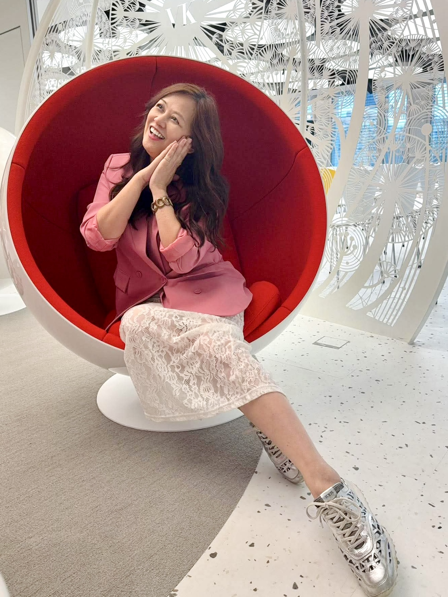

代謝調控
閱讀專文說明 →
如何從日常飲食改善代謝症候群的關鍵指標？
代謝症候群不只是數字問題，更是身體長期發炎的訊號。透過全營養彈性熱量飲食法（CNFCD），調整餐盤比例，讓身體重新啟動燃燒機能。

以 20 年護理專業為基礎，結合營養與代謝管理，陪伴你找回健康、理想體態與自信，讓改變成為更美好的人生。

目前是一位健康管理顧問與創業家，擁有 20 年護理專業背景，專注於代謝健康、營養管理與體態管理。透過全營養彈性熱量飲食法（CNFCD）、營養知識與生活習慣管理，陪伴想改善健康、管理體態的人，建立適合自己的健康生活方式。
除了服務個人客戶，我也致力於培育健康管理顧問、建立團隊，讓更多人有機會透過健康創造價值，實現自我成長。
脫下護理角色，我熱愛旅行、接觸不同文化，喜愛研究新工具與能提高生活工作效率的 AI 應用。近年經營自媒體與 Podcast《改變方程式》，期待把健康知識變得更親近生活。
改變從來不嫌晚，52 歲依然有重新選擇的機會與底氣。
曾經，我有 20 年的護理工作經歷，也曾是一位不太需要煩惱體重的瘦子。沒想到，人生在不知不覺中改變了——15 年間，體重增加了 23 公斤。
從穿衣服開始有了限制，到照鏡子時不再那麼喜歡自己的模樣，我才真正體會到，身體的改變往往不是一夕之間，而是長期生活習慣累積的結果。
身為護理人員，我看過無數疾病，深知健康的重要。但當健康危機真正發生在自己身上時，才更懂得預防與日常管理的深遠意義。
重回理想體態與輕盈健康的逆齡見證
結合臨床護理專業與實證指標，從根源檢視與調理身體機能，協助掌握代謝關鍵。
全營養彈性熱量飲食法（CNFCD），擺脫極端飲食限制，吃得豐盛且健康無負擔。
重視脂肪、骨骼肌與體水分的真實比例，回歸線條平衡與精神活力，不盲信體重機。
將專業醫護衛教化繁為簡，建立每個人都能輕鬆聽懂、落實在生活中的自主健康力。
培育健康管理顧問團隊，建立健全互助的陪伴系統，帶領夥伴拓展健康事業新版圖。
透過 Podcast《改變方程式》與多媒體影音傳播實證觀念，擴大正向的健康影響力。
一對一線上健康陪伴，為你量身打造適合長久運行的生活型態。
以 20 年護理專業視角，深入解析日常作息、代謝盲點與體況瓶頸，找回身體問題的根本核心。
落實全營養彈性熱量飲食法（CNFCD），規劃符合家庭與工作生活節奏的日常餐盤，拒絕挨餓反彈。
改變需要同行者。在面對心態動搖或聚餐應酬時，給予即時策略指引與鼓勵，陪你穩健看見成果。
健康是一切自信的基礎。當你重新拿回身體的主控權，也會擁有突破自我設限的勇氣。除了個人體態管理，我更致力於培育女性健康管理顧問，透過有系統的專業訓練與實踐陪伴，支持更多女性走出自己的事業道路，活出獨立自主的光彩。
透過文字、影像與聲音，把複雜的健康與代謝知識變得容易理解。


每一步的堅持，都在見證身體與心態的奇蹟甦醒。
「健康不是短期節食的折磨，而是真正看懂身體需要什麼。在 Freya 的專業帶領下，我才明白原來健康飲食可以如此自在富足。」
「Freya 護理長的溫暖與嚴謹，讓我在減脂過程中從不感到孤單。這不僅改變了我的身型，更讓我重拾對日常的自信與掌控感。」
不論妳想找回健康、重塑體態、活出女力，或開啟事業新篇章，Freya 都期待與妳相遇。